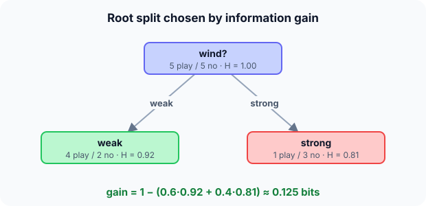

Prerequisites
- Logarithms in base 2.
- Proportions within a group.
- The tennis dataset (same numbers).
The analogy
Everyday analogy
Think of the game "20 questions". A good first question splits the possibilities as evenly and usefully as possible, like "is it alive?", not "is it a giraffe?".
A decision tree chooses each question the same way: the split that leaves the children as "pure" as possible, measured by entropy (or Gini impurity).
How it works
Data: play days (5): sunny 2, rainy 3; weak wind 4, strong 1. No-play days (5): sunny 3, rainy 2; weak 2, strong 3. Entropy of a group with proportions $p$ and $1 - p$: $H = -p\log_2 p - (1-p)\log_2(1-p)$.
Start with choosing the first split
Root: 5 play, 5 no, so $H = 1$ bit. Information gain = $H(\text{parent})$ − weighted average $H(\text{children})$. Predict, then open "Check".
Example: predict before you read
Step 1. Split on outlook: sunny (2 play, 3 no) and rainy (3 play, 2 no). Predict the children's entropy and the gain.
Check
Both children have $H(0.4) \approx 0.971$. Weighted average 0.971, so gain $= 1 - 0.971 = 0.029$.
Step 2. Cover the next line and guess: split on wind, weak (4 play, 2 no) and strong (1 play, 3 no).
Check
$H(4/6) \approx 0.918$ and $H(1/4) \approx 0.811$. Weighted: $0.6 \cdot 0.918 + 0.4 \cdot 0.811 \approx 0.875$. Gain $\approx 0.125$.
Step 3. Which split goes at the root?
Check
Wind: it has the larger information gain (0.125 > 0.029).

Quick recall: Before reading further, cover the text above and say out loud: what does an entropy of 1 bit mean for a two-class group?
Check your answer
Maximum uncertainty: the group is 50/50. A pure group has entropy 0.
Finish the picture: growing and stopping
After the wind split, each child is split again in the same way, until a stopping rule applies.
- Weak-wind child (4 play, 2 no). Predict the leaf label if we stop here.
Check
"Play", the majority. The tree would be right 4 times out of 6 in that branch.
- No stopping rule at all. Predict the training accuracy and the risk.
Check
The tree grows until every leaf is pure: 100% training accuracy, but it overfits. Limit the depth, require a minimum number of samples per leaf, or prune.
Quick recall: Without scrolling up, say out loud: why can a fully grown tree reach 100% training accuracy?
Check your answer
It keeps splitting until each leaf is pure, which can mean one leaf per training example: it memorises the data.
Full worked calculation
Every logarithm and every weighted average behind the root split, then the same decision made with Gini impurity. Data: 10 days, 5 play / 5 no.
| Split | Child | Play / No | Share of days | Entropy | Gini |
|---|---|---|---|---|---|
| Outlook | sunny | 2 / 3 | 5/10 | 0.971 | 0.480 |
| Outlook | rainy | 3 / 2 | 5/10 | 0.971 | 0.480 |
| Wind | weak | 4 / 2 | 6/10 | 0.918 | 0.444 |
| Wind | strong | 1 / 3 | 4/10 | 0.811 | 0.375 |
-
1Entropy of the root
$$H = -0.5\log_2 0.5 - 0.5\log_2 0.5 = 0.5 + 0.5 = 1 \text{ bit}$$A 50/50 group is as uncertain as possible: you need one full yes/no question (1 bit) to know the answer. Every split will be judged by how much of this bit it removes.
-
2Entropy of a 2/3 child (sunny)
$$H = -0.4\log_2 0.4 - 0.6\log_2 0.6 = 0.4 \cdot 1.322 + 0.6 \cdot 0.737 = 0.529 + 0.442 = 0.971$$$\log_2 0.4 \approx -1.322$ and $\log_2 0.6 \approx -0.737$. The child is still very mixed, so its entropy is close to 1. Rainy (3/2) is the mirror image, also 0.971.
-
3Gain of the outlook split
$$\text{Gain} = 1 - \left(\tfrac{5}{10} \cdot 0.971 + \tfrac{5}{10} \cdot 0.971\right) = 1 - 0.971 = 0.029$$Each child's entropy is weighted by its share of the days. Asking about the outlook leaves us almost as uncertain as before: only 0.029 bits gained.
-
4Entropies of the wind children
$$H(\tfrac{4}{6}) = \tfrac{2}{3} \cdot 0.585 + \tfrac{1}{3} \cdot 1.585 = 0.918, \qquad H(\tfrac{1}{4}) = 0.25 \cdot 2 + 0.75 \cdot 0.415 = 0.811$$Weak wind (4 play, 2 no) and strong wind (1 play, 3 no) are both more lopsided than 50/50, so both have lower entropy than the root.
-
5Gain of the wind split
$$\text{Gain} = 1 - \left(0.6 \cdot 0.918 + 0.4 \cdot 0.811\right) = 1 - (0.551 + 0.325) = 0.125$$The weights are 6/10 and 4/10 because the children have different sizes. Wind removes 0.125 bits of uncertainty, four times more than outlook, so it becomes the root question.
-
6Same decision with Gini impurity
$$\text{Gini} = 1 - p^2 - (1 - p)^2: \quad \text{wind } 0.6 \cdot 0.444 + 0.4 \cdot 0.375 = 0.417 \;\;\text{vs}\;\; \text{outlook } 0.480$$Gini measures the chance of mislabelling a random item if you label randomly by the group's proportions. The root has 0.5; wind lowers it to 0.417, outlook only to 0.480. Gini and entropy agree, as they usually do.
What the numbers tell us
The root asks about wind: information gain 0.125 bits versus 0.029 for outlook (Gini: 0.083 versus 0.020 decrease).
The same calculation is repeated inside each child to choose the next question, until the leaves are pure or a stopping rule applies.
The rule in plain words
At each node, try every feature (and threshold); pick the split with the largest information gain (or largest Gini decrease). Recurse on each child.
Stop when a node is pure, too small or too deep; label each leaf with its majority class (or mean value, for regression).
Quick recall: Before you read the code, describe how to compute the information gain of a split, in your own words. Then check below.
Check your answer
Compute the parent's entropy, compute each child's entropy, weight each child by its share of the examples, and subtract the weighted sum from the parent's entropy.
The code
Read this code after you have computed the two gains by hand. It will make more sense.
double entropy(int pos, int neg) { /* in bits */
double n = pos + neg, h = 0;
if (pos) h -= pos / n * log2(pos / n);
if (neg) h -= neg / n * log2(neg / n);
return h;
}
double info_gain(int lp, int ln, int rp, int rn) { /* left and right child counts */
double nl = lp + ln, nr = rp + rn, n = nl + nr;
return entropy(lp + rp, ln + rn) - nl / n * entropy(lp, ln) - nr / n * entropy(rp, rn);
}Definition
What you just did, in one line: a decision tree predicts by following a sequence of feature tests from the root to a leaf, with each test chosen to maximise information gain (reduction in entropy).
flowchart TD
A["node with its examples"] --> B{"pure, too small or too deep?"}
B -->|yes| L["leaf: predict the majority class"]
B -->|no| C["try every feature and threshold"]
C --> D["keep the split with the largest information gain"]
D --> E["recurse on each child"]
How costly is it?
Quick recall: Before looking at the formula, predict: what is the entropy of a group with 3 play and 1 no?
Check your answer
$-0.75\log_2 0.75 - 0.25\log_2 0.25 \approx 0.811$ bits.
Entropy and information gain for a split into children $S_1, \dots, S_k$:
$$H(S) = -\sum_{c} p_c \log_2 p_c, \qquad \text{Gain} = H(S) - \sum_{i} \frac{|S_i|}{|S|} H(S_i)$$Gini impurity, $1 - \sum_c p_c^2$, is a cheaper alternative and usually picks the same splits.
| Phase | Cost | Why |
|---|---|---|
| Training | about $O(m \, n \log n)$ | Sort each of $m$ features at each level |
| Prediction | $O(\text{depth})$ | One test per level |
| Memory | $O(\text{number of nodes})$ | One test or label per node |
Best for: tabular data with mixed numeric and categorical features, when you need a model people can read.
- Pro: Interpretable: the rules can be read and explained.
- Pro: No scaling needed; handles interactions and non-linear boundaries.
- Con: Overfits easily if not limited or pruned.
- Con: Unstable: a small change in the data can change the whole tree.
Warning
Information gain favours features with many distinct values (an ID column would split every example into its own pure leaf). Use gain ratio or Gini, and never feed ID-like columns to a tree.
Exam tip
Exams ask you to pick the root split. Make a table per candidate: child counts, child entropies, weighted average, gain. The largest gain wins.
Common mistakes
- Forgetting to weight each child's entropy by its size.
- Using $\log$ in base $e$ while claiming the answer is in bits.
- Letting the tree grow without limits and trusting its 100% training accuracy.
Try it yourself
Exercise 1 (warm-up)
Compute the entropy of a group with 2 positives and 2 negatives, and of a group with 4 positives and 0 negatives.
Hint
Half and half is maximum uncertainty.
Answer
1 bit and 0 bits.
Exercise 2 (a bit harder)
A parent has 6 positives and 2 negatives. Split A gives children (4+, 0−) and (2+, 2−). Compute the information gain. Write your answer down before you open it.
Show answer
Parent $H(0.75) \approx 0.811$. Children: 0 and 1 bit, weighted $0.5 \cdot 0 + 0.5 \cdot 1 = 0.5$. Gain $\approx 0.311$.
Did you know?
Did you know?
Ross Quinlan's ID3 (1986) introduced information gain for tree learning; CART (Breiman and others, 1984) uses Gini impurity and is the basis of scikit-learn's trees.
A single tree is rarely the best model, but hundreds of them, combined in random forests or gradient boosting, win most competitions on tabular data.
Key points to remember
If you remember one thing from each line, remember the because.
- Splits are chosen by information gain because the best question is the one that makes the groups purest.
- Entropy is 1 for a 50/50 group because that is maximum uncertainty for two classes.
- Trees need no scaling because each split compares one feature with a threshold.
- Unlimited trees overfit because they can split until every training example has its own leaf.
- Prediction is fast because it follows one root-to-leaf path.
Self-check questions
Answer these in order, out loud. They follow the page, so your answers become the script of your video.
- How is a decision tree like the game "20 questions"?
Sample answer
Each question is chosen to narrow down the possibilities as much as possible, and you follow the answers down to a conclusion.
- Compare the outlook and wind splits on the tennis data.
Sample answer
Outlook gives children with entropy 0.971 each, gain 0.029. Wind gives 0.918 and 0.811, weighted 0.875, gain 0.125. Wind is chosen.
- Why does
entropyskip the term when a count is 0?A good answer mentions $\log 0$.
Sample answer
$\log_2 0$ is undefined (minus infinity), but $p \log p \to 0$ as $p \to 0$, so the term is simply left out.
- So what is a decision tree, in one sentence?
Sample answer
A model that predicts by following feature tests from the root to a leaf, with each test chosen to maximise information gain.
- Why did wind give more information than outlook?
A good answer compares how mixed the children are.
Sample answer
Outlook's children stay close to 50/50 (2/3 and 3/2), while wind's are more lopsided (4/2 and 1/3), so they are purer and their entropy is lower.
- What do training and prediction cost?
Sample answer
Training is roughly $O(m\,n \log n)$; prediction is $O(\text{depth})$.
- Give two pros and two cons of decision trees.
Sample answer
Pros: interpretable, and no scaling needed. Cons: overfit easily, and unstable to small data changes.
- If you had to teach this to a friend in 2 minutes, what would you leave out, and why?
Sample answer
I'd leave out Gini and gain ratio. I'd keep the 20-questions analogy, the wind-versus-outlook gain calculation, and "pick the purest split, stop before it memorises".
External resources
- scikit-learn: Decision trees: algorithms, parameters and visualisation.
- Wikipedia: Decision tree learning: ID3, C4.5, CART and split criteria.
- Google: Decision forests course: trees and forests, step by step.
Videos
- YouTube search: StatQuest decision trees: StatQuest builds a tree by hand.